In today's society, climate emission is a highly controversial topic and there are many opinions around what is best for the environment. Some people do not believe in the man-made climate crisis and some change their entire lives to change the environment. The problem we have chosen is based on the fact that the inhabitants of the world doesn't make an adequate effort to reduce climate emissions. Below we will look into what some organizations say about the climate crisis.
Caption: Global warming causes the ice to melt faster than before.
The climate represent an average of weather data registered over a period of several decades (UN, obtained 2018,
2nd paragraph). The climate on earth has always changed, but now the changes go faster than ever. Based on
thousands of highly valued scientific articles, 97% of researchers believe that the changes are man-made and
that human impact is the most significant contributor to the global warming we see today, but only a dozen
reports reject this (Nature Conservation Association [NVF], obtained in 2018, paragraphs 1 and 3). The UN Climate
Panel's 5th main report states that much of this is due to man-made greenhouse gas emissions and other
interventions
in nature such as deforestation, agriculture and similar.
Some consequences due to climate change are:
Increased emissions of greenhouse gases are due to humans and the use of energy sources such as coal
(fossil fuels), gas, or oil. If we are unable to reach the two-degree target, which means that the
temperature cannot rise more than 2 degrees from how it was in 1850 to 2100, climate change will be
impossible to control. The Paris agreement will limit the increase even more; to 1.5 degrees. So the
only way to stop the changes is to emit much less greenhouse gas as well as removing carbon dioxide
that is already in the atmosphere, and in order to achieve this, all countries must cut greenhouse gas
emissions immediately (UN, obtained in 2018).
The Intergovernmental Panel on Climate Change (IPCC) has proposed concrete measures to cut greenhouse gas
emissions, and in point 3 they state that "human consumption and lifestyle must be sustainable." Some points
under this point are: travel more by public transportation, choose quality products, produce sustainably, throw
less food and eat less meat (UN, obtained in 2018).
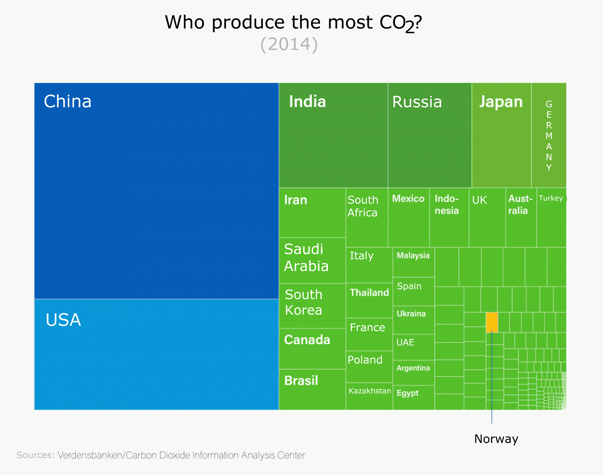
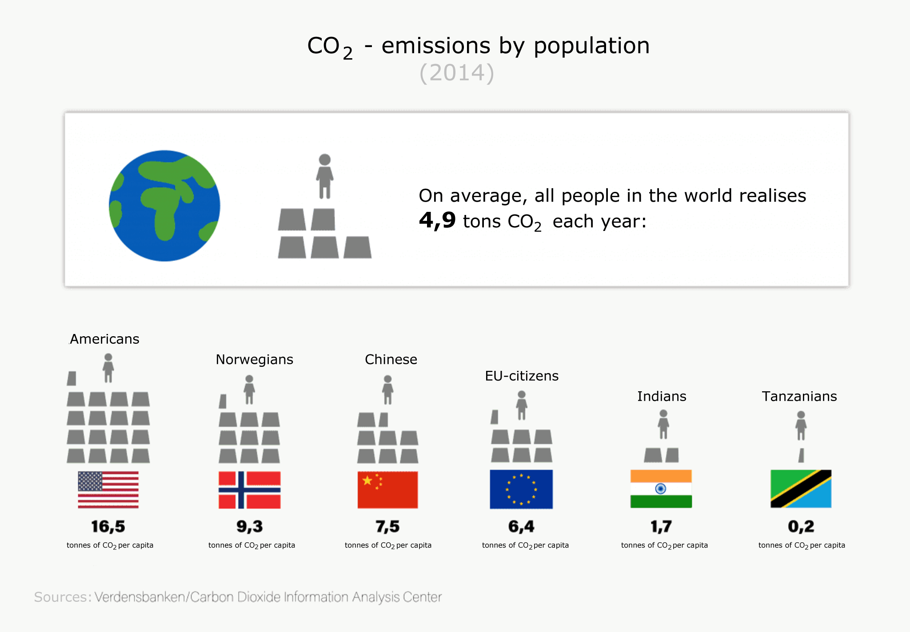
In the figure above it is illustrated that globally, China is releasing most CO2 (2014), followed by the
United States,
India and Russia. Norway is very far behind in the list. But in the second figure it is shown that in Norway,
9.3 tonnes
CO2 per capita are released every year, just behind the United States with 16.5 tonnes per capita, but over
China with
7.5 tonnes per capita. Globally, 4.9 tonnes of CO2 per capita are released, which shows us that Norwegians's
CO2 emissions
are far above average than on a global basis.
We have also found good research in the field of TNS Gallup (Eva Fosby Livgard, 2016), claiming that 43% of
Norway's
population believes that Norway does little to adapt to climate change. At the same time, two out of three
are concerned
what areas they can make changes to improve the environment.
Part of the solution to the issue is to raise awareness about what an individual can do to save the
environment(In their
daily life?). That’s why we came up with the Green with tech app. It is an application that makes it possible for
every
single person with a smartphone to keep track with their own consumption. Which could give the users the
knowledge and
motivation to reduce their own consumption. It is an application that we believe will become more automated by
the internet
of things. This means that the app will able to connect to all objects that support the internet. Thus, making it
easier
to record data. Which also leads to an increased joy of keeping track with your personal consumption.
By using SurveyMonkey we made a survey asking people questions regarding the state of the climate. Offering the
participants to
answer anonymously. We quickly learned that an overwhelming part of the people that we asked was willing to do
their part to
handle the climate changes. Stil, many of the participants felt that they lacked tools to be able to help in
their daily and
hectic life. The same survey could also tell us that rewardance is an important motivation to take part in this
change. People
with power is key to make the biggest changes we need to save the planet. Our solution is to engage the masses of
people, making
powerful people like politicians unable to ignore the issue. That is where we need to start.
Our application contains seven features that all contribute
to inspire and help the users to be more environment friendly. These are
made after conversations with: Zero, Environmental Agents, Ducky and
Framtiden.no. We also chose features based on thorough research around the
theme. We want to focus on why we chose the different elements of the
various functions below:
1. The "My Consumption" feature:
Explanation
With "My Consumption", the users will easily see how many percent they have achieved in terms of making
environmentally friendly choices. Our idea is that the users can easily choose the more environmental friendly
options, and get a visual overview of what they are doing and the benefits this is generating.
In "My Consumption", the users will be able to choose to enter manual choices so that these choices can
generate how well their choices are for the environment. This will appear with a circle divided by how many
percent they score. This overview will also motivate the consumer to wish to achieve higher scores. The scores
are rated from 0-100%, where 100% is the best one can achieve. At 100%, the application will generate a visual
circle as whole.
Why?
Most of the inspiration we received for this feature is obtained from (Håkon Lindahl, 2017, 7th paragraph),
where Lindahl writes that the most important categories for saving the environment are cutting car consumption,
power consumption, meat consumption and flights.
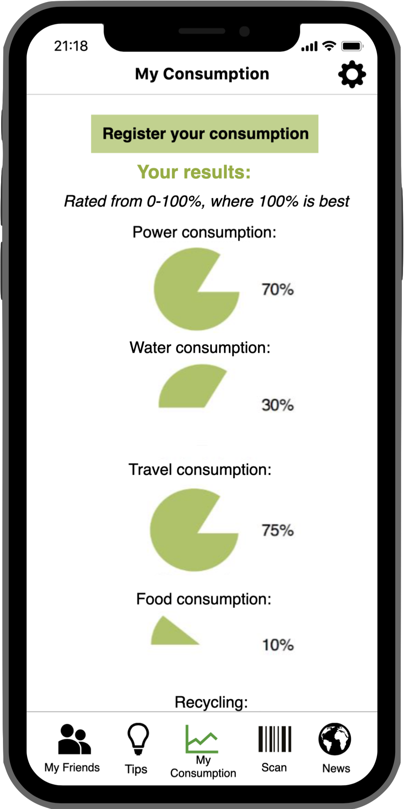
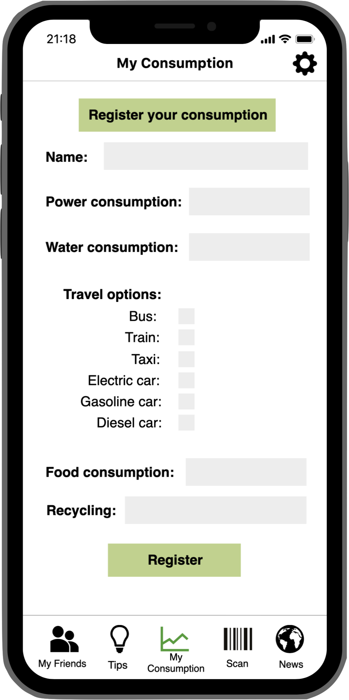
2. The “Reward” function:
Explanation
We chose to include the "reward"-feature to motivate the users to do good environmental friendly efforts. The app
itself will motivate the users to make the right choices, to help and to provide user-tips for individual
improvements.
The "reward"-feature is found on the page "My Consumption". When the users enters the reward page, they can see
how many percent they still need to get a reward. If the users has won rewards and not used it, they will receive
a notification on the page saying that they have an unused reward.
Why?
In the survey we conducted, many of the users thought it would be more motivating to take good action if the
users received some kind of reward. We wish to cooperate with sponsors who can help finance the rewards. Examples
of rewards can be sustainable products such as free travel on collective transportation or tickets to cultural
events like cinema, concerts, theaters, etc.
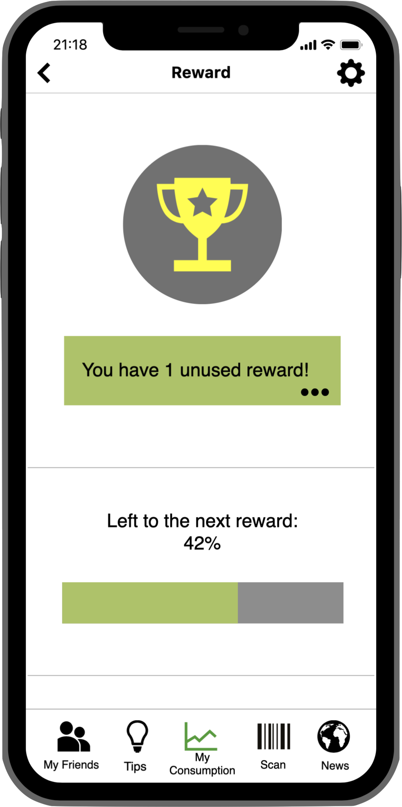
3. “My friends” feature:
Explanation
In the "My Friends" feature, the users can easily see the progress and consumption of everyone in his list of
friends. By looking at the rings around the profile images, it will be easy to see how good the user's friends have
performed. If the rings are red, the person has implemented a lot of good measures, if the color is green, it
indicates that the person has taken good action and if the rings are yellow, they are somewhere in between.
The percentage also tells exactly how good the person have performed a certain day. The users can also access each
person individually in the “Friends-list” to get a more detailed overview. Here they can view power consumption,
water consumption, food consumption and recycling.
Why?
We chose to include this feature because it creates a sort of a positive competition. This way the users are able
to compete daily on who has the highest percentage or how good actions they have taken. For the user, it can also
be exciting to compare their own results with their friend’s, and be inspired to improve by looking at what other
users have done.
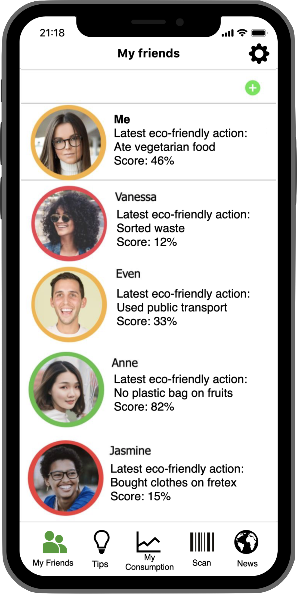
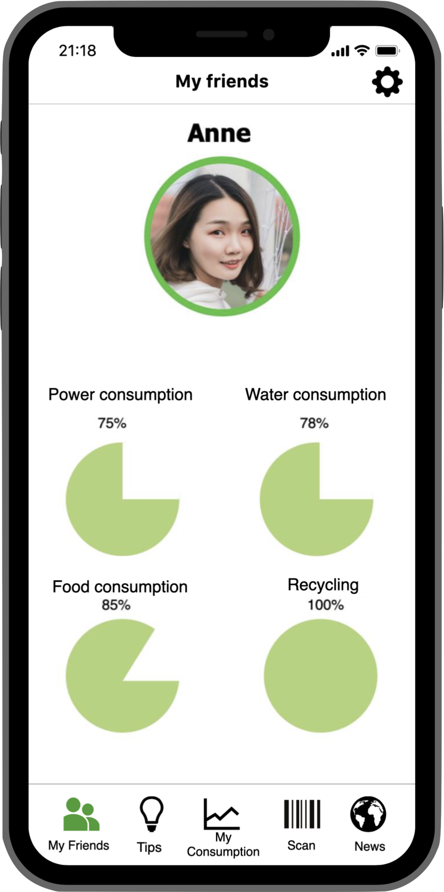
4. The "Tips" feature:
Explanation
With the "Tips" feature, the users will easily be able to get tips and help with what they can do better and why
this is good for the environment. The idea behind this is that the tips should be generated in relation to what
manually registers through "usage" function or that it should be able to be automatically register through smart
home features in the house, such as power meters or water meters. In our application we have included some simple
tips like: turn off the light, shower faster, go instead of driving a car or vegetarian day.
Why?
First and foremost, it emerged from the survey we made that many people could think of an application that reminded
them of being increasingly environmentally friendly. Therefore, we chose to add this item to our application.
According to framtiden.no (Håkon Lindahl, 2017, 7th paragraph) to drive less will give the greatest climate effect
from the everyday choices taken by the user.
Håkon Lindahl (2017, 7th paragraph) also writes that reducing meat consumption gives a fairly large cut in climate
emissions. He also mentions that putting down the heat in the home is a good idea to cut electricity consumption.
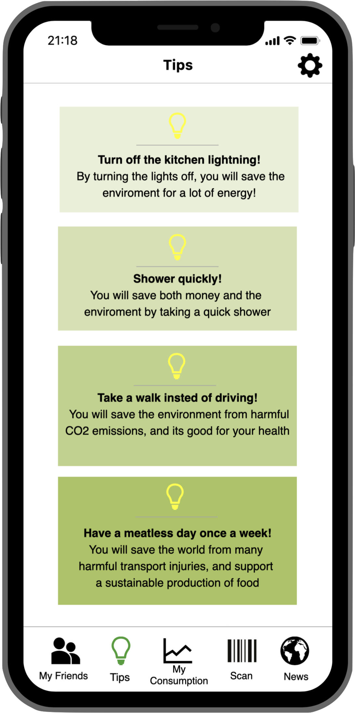
5. Feature “Scan products:”
Explanation
The "scan products"-feature allows the users to scan products to see how environmentally friendly they are. For
example, the users can see if the products are made of plastic or if it is packaged in plastic, if it has been
shipped far, whether it has been tested on animals, or other environmentally friendly dimensions. When the the
users have scanned a product, they can add it to favorites and thus have a simple overview of products. The users
can also see all the ingredients in a product and are able decide if it is something they want to buy or not.
Why?
By introducing this feature it will be even easier to choose environmentally friendly products. Not everyone is
aware of whether a product is good or bad, and this feature will make it easier to choose the right one. This
feature makes the consumer more aware of an easy and fast way, and allows any user to think more about their
choice.
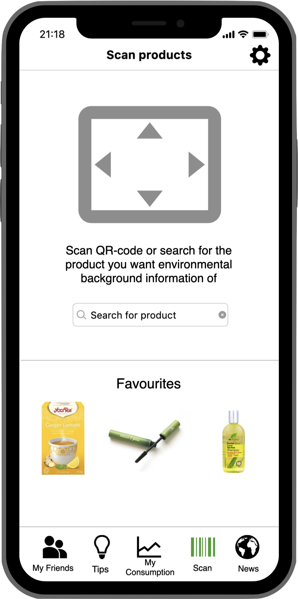
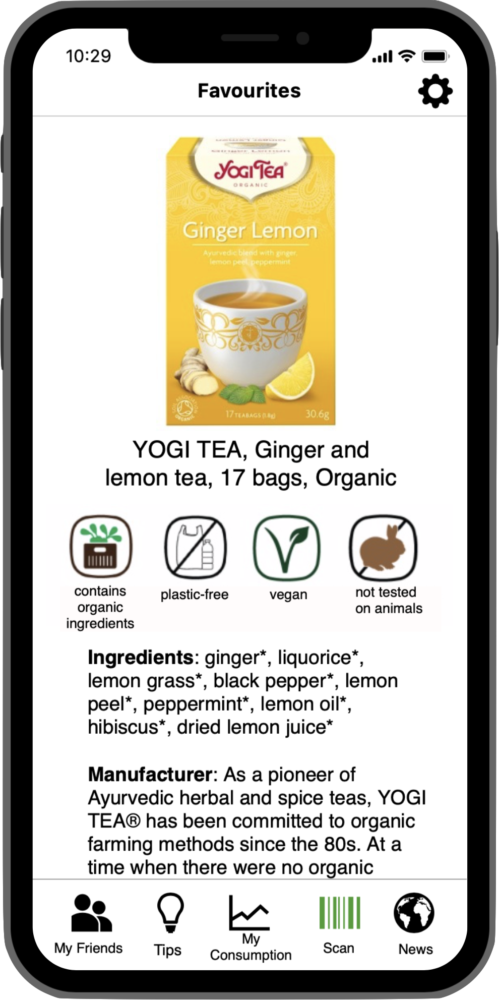
6. Funksjonen «Nyheter»:
Explanation
In the "News" feature, we want the users to easily find relevant news and research within the environment without
having to look it up on his own. The application generates news so the latest news will appear on the top.
Why?
Our intention behind this feature is that the consumer should be able to see if its actions have any impact on the
world community and also be able to keep up with important debates in the area.
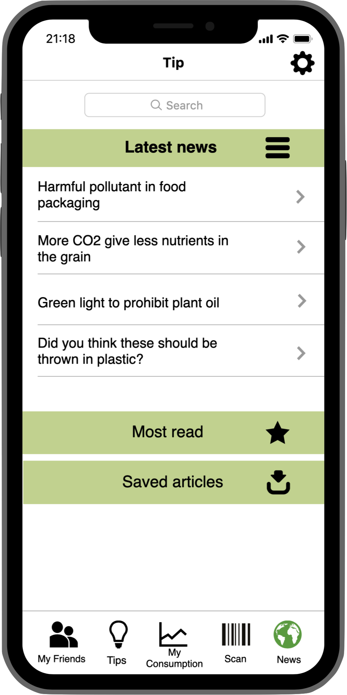
7. Function "Settings":
Explanation
In the "Settings" feature, we wanted to add an option that the application should be able to connect with smart
home features, internet of things, at home. This is meant as a future element as we think smart homes will become
increasingly prevalent over time. It will be possible to turn on this feature and both select each function that
shall automatically connect. They can also select that everything will automatically connect. Additionally, we have
a recommendation for whether they want the consumption to be visible to other friends. In settings they should also
be able to choose whether to manually add their options and they can have manual and automatic as a choice.
Why?
According to dinside.no (Tore Neset, 2014), there is a strong growth in the smart market and it appears that more
people want home appliances with smart features. Therefore, we have chosen to base our application on future
interaction with the smart home of the future.
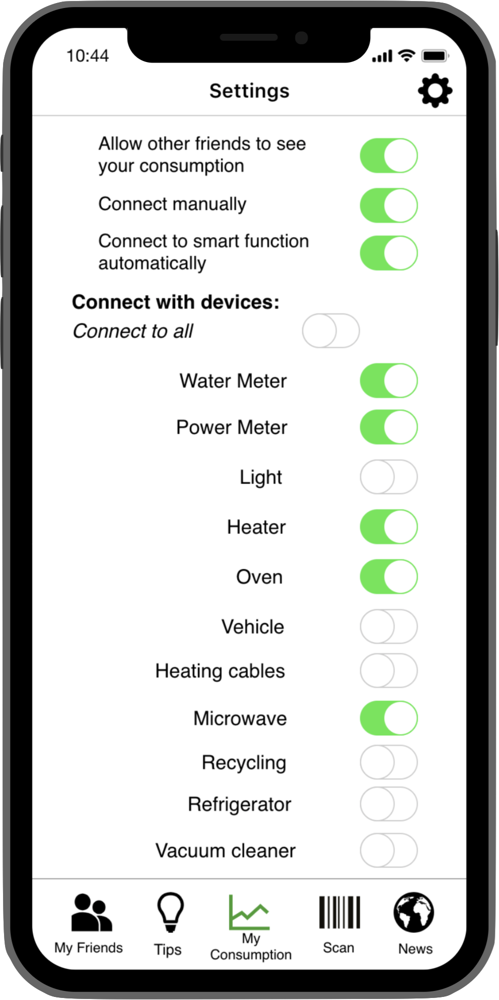
Universal design
Primarily we wanted our website to provide a good user experience. We have made it responsive to the most popular
devices: PC, tablet and smarthphone. We have also focused on a clean and comfortable design with colors and
images that create association to the issue and our solution.
We chose to have the images of the application in a large size to make it easy for the user to read when they are
on their smartphone.
Color and contrast
We chose natural colors because it provides associations to the environment. We made sure that there was enough
contrast between background-color and font by testing this in WebAIM.
Navigation
For optimal user experience, we have ensured that as many people as possible can use it. The website is easy and
fast to navigate with scroll, and navigation with the tab key will allow you to navigate around with just one
button. With this navigation menu, it is easy for the users to navigate to the different headings. We also chose
to have an item all the way down to scroll to the top quickly.
Multilingual
Because we want as many people as possible to be able to use our website, we have made the site available in both
Norwegian and English.
Informative
The website's goal is to be informative so the users can read and learn about our application. We have tried to
make the site as easy as possible with the most useful information. It's easy to capture the main points if
you're reading quick through the site, while you can read in depth if you have a good time.
Browser
We have tested the website in Google Chrome and the site should work optimally. Unfortunately, not all of the
features in HTML5 are supported by all browsers.
User testing of the website
We wanted our site to be as good as possible for everyone. The usertest results showed clearly what we had done
right and what we had to improve. The first thing we did in this process was to make a PACT-analysis to imagine
what potential challenges the users might have in meeting our website. The user-test gave us a good indication of
whether we had achieved what we wanted or not.
We had nine people testing our website. They all gave different feedback. Several people found it easy to
navigate through the website, and thought it was clear and easy to understand. Some commented that "til topp"
navigation should be called "til toppen". Most people found that there was enough contrast between text and
background-color. Several commented that the website was not optimal in mobile version and that the dropdown
"menu" did not go back after pressing it. They also commented that they did not get the headline when they
pressed the link, but a little further down the page. Some of our test subjects also wanted to have a color or a
decoration that made them click on one of the links in the navigation menu.
Changes based on user tests
We made changes based on what our test persons told us. We changed "to top" to "to the top". We improved this by
changing the top to an arrow when the screen is less than 1025 pixels. We redone the dropdown menu so it goes up
by itself after pressing the link. We changed so that you get to the headline when you click on the link.
Framtiden.no. (2017, 16. januar). Slik kutter du klimautslippene mest.
Dinside.no. (2014, 10.
november).
Smarthjem i kraftig vekst.
TNS
Gallup (2016) TNS Gallups Klimabarometer.
FN. (hentet 26.oktober 2018).
Naturvernforbundet.
(hentet 26.oktober 2018). Spørsmål og svar om klima.
Earth
Rangers.
(hentet 21.november 2018). What’s the Deal With Climate Change?